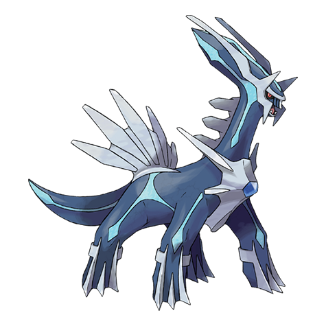
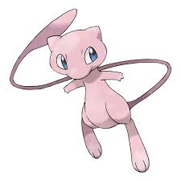
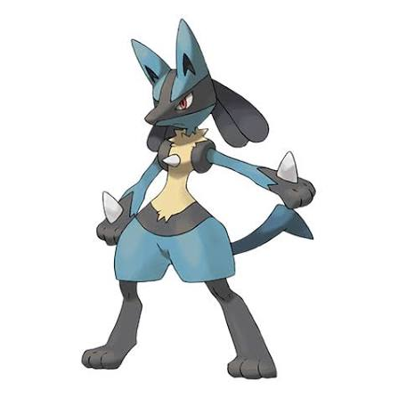

Arceus e a Criação do Universo Pokémon
Por: Allicy

Segundo a mitologia de Sinnoh, antes de existir o mundo físico, havia apenas o caos primordial. Do nada, surgiu um Ovo que chocou e deu origem a Arceus, o primeiro Pokémon. Conhecido como "O Original", acredita-se que ele moldou o universo com seus mil braços.

Para estruturar o cosmos, Arceus criou o Trio da Criação: Dialga para governar o tempo, Palkia para controlar o espaço e Giratina para reger a matéria antimatéria. Juntos, eles estabeleceram as leis fundamentais que regem todas as regiões do mundo Pokémon.
Mew: O Ancestral de Todos os Pokémon
Por: Allicy

Mew é um Pokémon Mítico extremamente raro que possui a composição genética de todos os Pokémon existentes. Por ser capaz de aprender qualquer movimento e ficar invisível à vontade, pesquisadores acreditam que ele seja o ancestral direto de quase todas as espécies conhecidas.
Gengar e a Dimensão das Sombras
Por: Allicy

Habitante dos cantos escuros e casas abandonadas, Gengar é o mestre da dissimulação. Dizem os relatos da Pokédex que, se você sentir um arrepio repentino e a temperatura cair cerca de 5 graus, um Gengar se escondeu na sua própria sombra tentando pregar uma peça.
O Lendário Guardião das Tempestades: Lugia
Por: Allicy

Conhecido como o "Guardião dos Mares", Lugia possui um poder tão avassalador que um simples bater de suas asas pode provocar tempestades de 40 dias. Para proteger os humanos da destruição inadvertida, ele prefere viver no fundo das fossas oceânicas da região de Johto.
Rayquaza e o Equilíbrio dos Céus
Por: Allicy

Habitando a camada de ozônio por milhões de anos, Rayquaza é o mediador supremo da região de Hoenn. Quando Groudon (Senhor da Terra) e Kyogre (Senhor dos Mares) entram em confronto direto ameaçando o planeta, cabe a Rayquaza descer dos céus para encerrar a batalha primordial.
Lucario e a Percepção da Aura
Por: Allicy
Lucario possui a capacidade única de detectar e manipular a Aura — a energia vital emitida por todos os seres vivos. Ao focar essa energia, ele consegue ler os pensamentos e emoções de outros Pokémon e humanos a mais de um quilômetro de distância.
A Maldição de Mimikyu
Por: Allicy

Originário da região de Alola, Mimikyu é um Pokémon solitário que usa um disfarce feito à mão parecido com Pikachu para tentar fazer amigos. Sua verdadeira aparência abaixo do pano é desconhecida e dizem as lendas urbanas que quem olhar seu corpo real é atingido por uma doença misteriosa.
Charizard: O Orgulho do Tipo Fogo
Por: Allicy

Voando em busca de adversários fortes, a chama na cauda de Charizard queima mais intensamente à medida que ganha experiência em batalha. Conhecido por seu orgulho, ele nunca usa seu sopro de fogo escaldante contra um oponente mais fraco que ele.
O Mistério das Evoluções de Eevee
Por: Allicy

Eevee é famoso por sua estrutura genética instável, permitindo que ele se adapte aos ambientes mais diversos. Essa característica possibilita que ele evolua para oito formas distintas conhecidas como "Eeveelutions", variando do fogo ao gelo, dependendo das pedras elementais ou da amizade com sua treinadora.
A Jornada da Treinadora nos Tempos Atuais
Por: Allicy

A cultura de treinar Pokémon permanece forte através de gerações. Seja desafiando Ginásios Locais, participando de Campeonatos Mundiais ou preenchendo as entradas da Pokédex, a união e o respeito entre humanos e Pokémon continuam sendo a força motora desse universo.
A Filosofia dos Treinadores de Elite
Por: Allicy
"Pokémon fortes. Pokémon fracos. Essa é apenas a percepção egoísta das pessoas. Treinadores verdadeiramente fortes devem tentar vencer com seus favoritos."
A frase célebre da Campeã Karen sintetiza o verdadeiro espírito da jornada: mais do que buscar atributos numéricos perfeitos, o vínculo genuíno de confiança é o que define um Campeão de Liga.
A Conexão entre Humanos e Pokémon
Por: Allicy
Os Pokémon não são vistos apenas como parceiros de batalha, mas como companheiros de vida. Ao trabalharem juntos na construção de cidades, na preservação da natureza e em jornadas pessoais, humanos e criaturas demonstram que a cooperação mútua supera qualquer desafio.